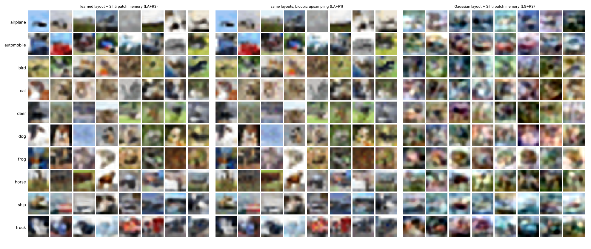
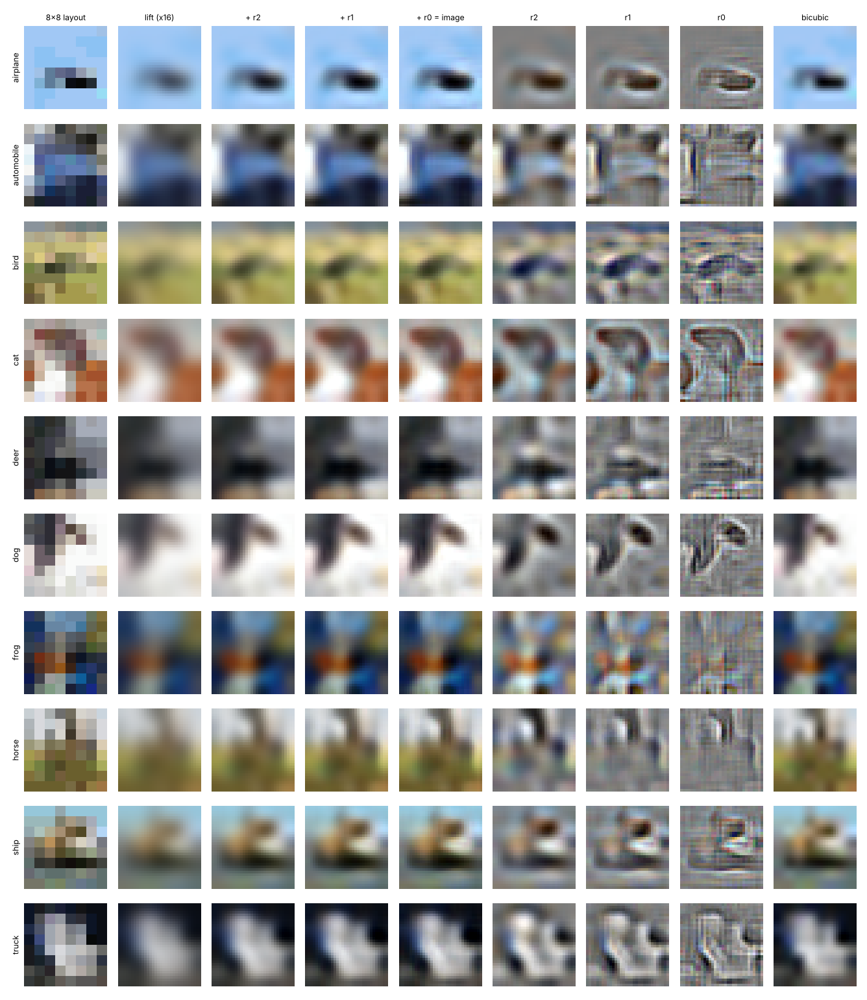
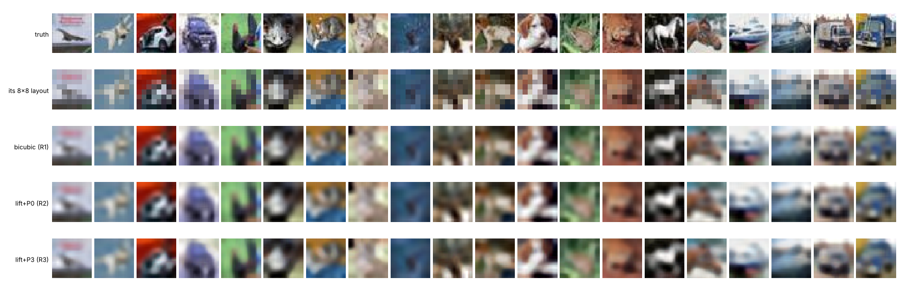
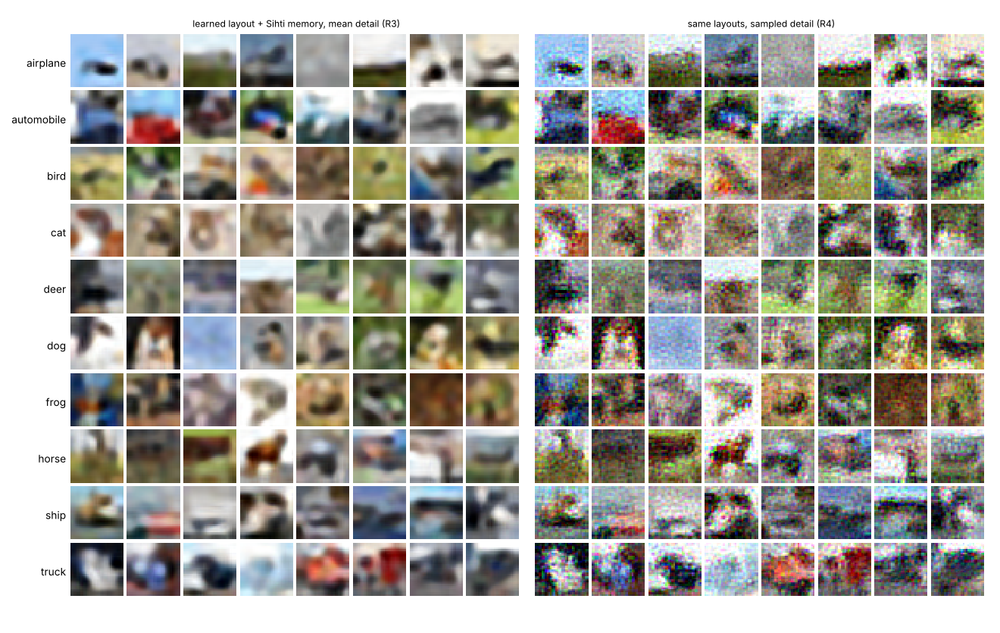
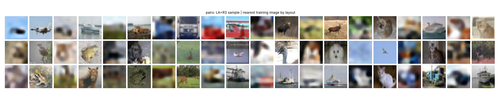

A small transformer draws an 8×8 colour layout for a class, one cell at a time. Everything after that is closed form: a single linear lift to Sihti's coarse state, then the patch memory fills the three finer residue bands. Both stages run live in this page.
Mean detail is the pre-registered arm: each code returns its least-squares residue. Sampled detail adds a draw from that code's leftover spread, per colour channel, which is why it comes out as coloured grain. The gates used temperature 1.0; other temperatures are here only for looking.
Held-out CIFAR-10 test images the model never saw. Each one is cut down to its 8×8 layout, then filled back in three ways. The numbers are PSNR to the real image, computed here.
Gates and thresholds were committed in PREREG.md before any of them ran.
Pre-registered in PREREG_STOCHASTIC.md after the main run. The second judge has the same network, trained on bicubic-upsampled 8×8 layouts of the training images; it has no pass/fail.





The layout is close to its ceiling; the detail is not. Real test images cut to their own 8×8 layout and filled by the Sihti memory sit at FD 102 from real images. The learned layouts, through the same fill, sit at 110. Two sets of real images sit at 1. Almost all of the distance to real photos is missing detail, not a wrong layout.
Why the detail is missing. Each code in the patch memory is a least-squares map, so it returns the average residue for a window. Averaging edges keeps them; averaging texture cancels it. Even from true layouts the fills carry 11% of real images' fine-band energy.
Why G1 failed. The pre-registered judge was trained on sharp photos, and blurry images collapse onto three of its classes (bird, cat, ship). It reads only 26% of real photos filled from their own layouts. The judge for blurry images reads 61% of those, 48% of the learned layouts and 55% of the Gaussian ones. A Gaussian sample sits on its class's mean colours, which is what a classifier keys on; to the eye those samples are colour mush, and the learned ones are scenes. Classifier accuracy rewards stereotypes here, the same effect v1 saw on CIFAR.
Data. CIFAR-10 from a GitHub mirror that re-saved the images as JPEG at quality about 75, because the official site was not reachable from the build machine. JPEG removes some of exactly the finest detail this measures.